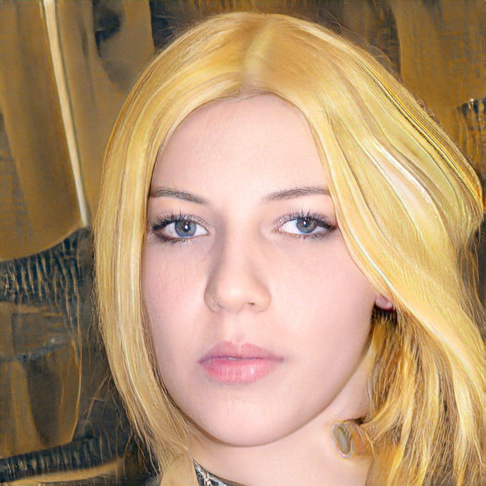
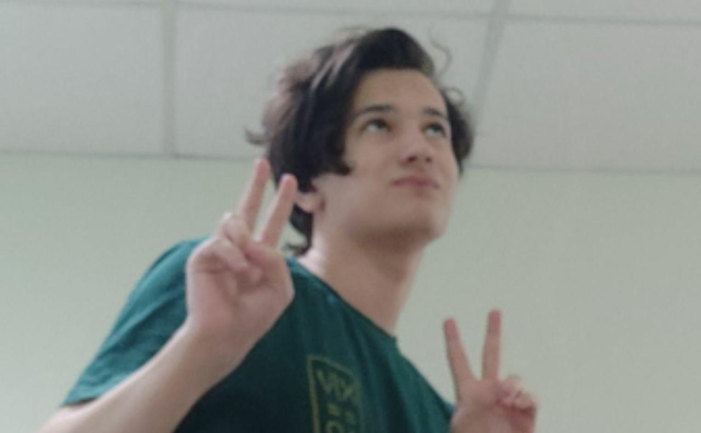
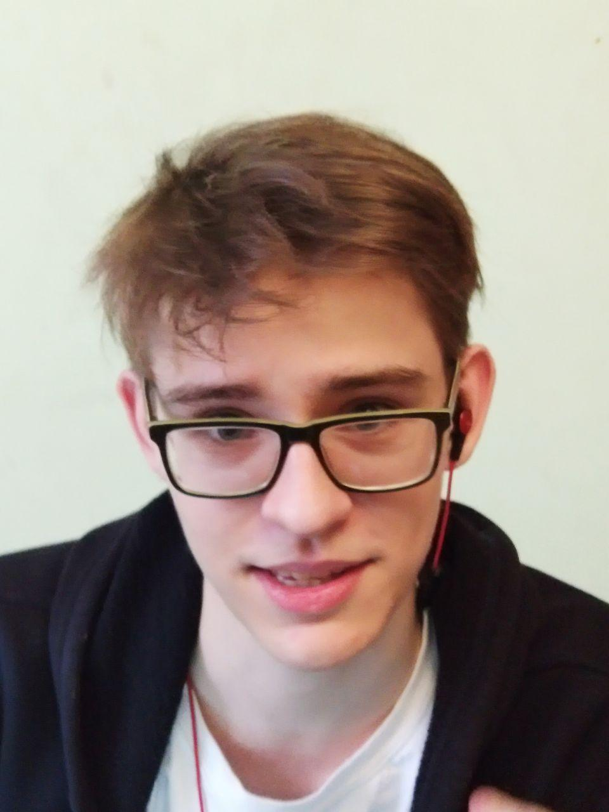
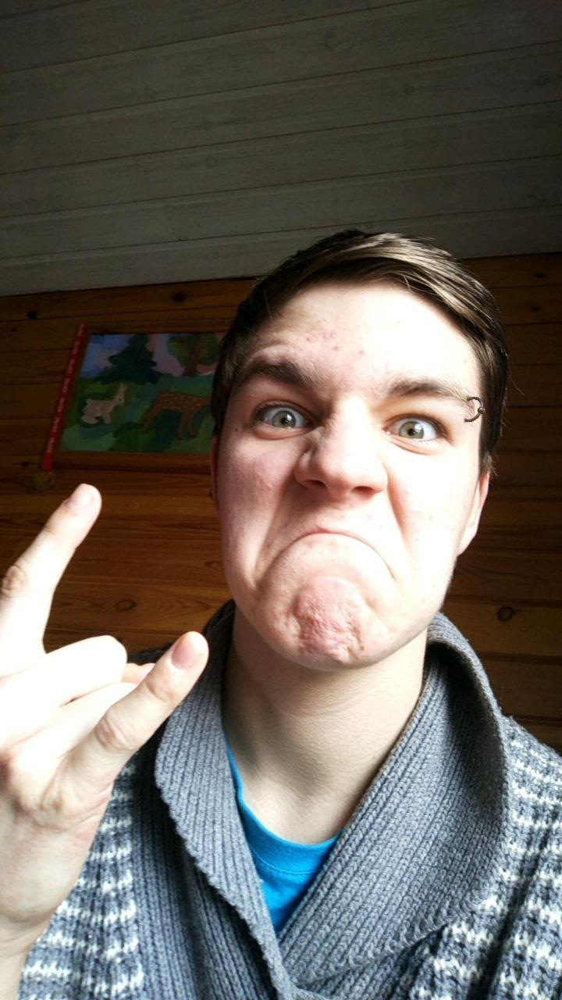
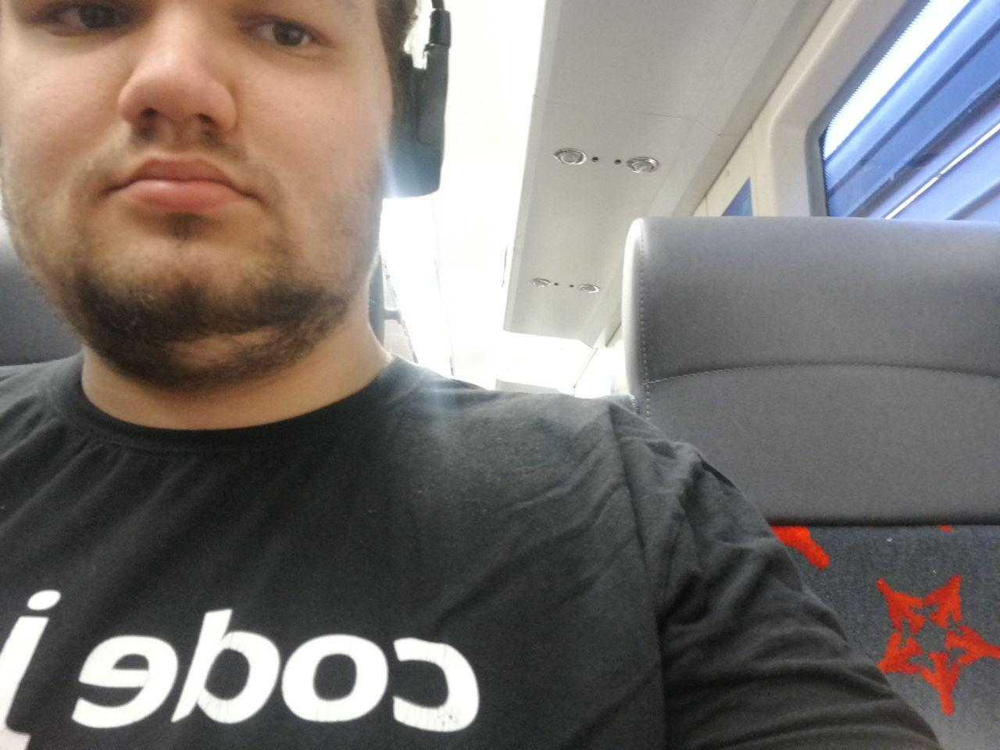

Большинство абитуриентов, которые не смогли поступить на филфак МГУ или в Высшую школу равноправия, выбирают между двумя вариантами: МИСиС и МАИ. В этой статье мы постараемся разобраться с этим сложным вопросом, ведь не все люди способны взять призера всероса или других перечневых олимпиад. Есть люди, которые поступают по ЕГЭ, честным трудом ботая русский, и эта статья полностью для них![1] Наш экспертский состав состоит из бывалых олимпиадников, которые написали не одну сотню олимпиад(а ноль).





Студия дизайна Артема Лебедя: Есипов Иван(@estacada), Антрушин Евгений(@piezzacondoleezza), Степкин Степан(@sorrynoclip). 2020.
Любые совпадения случайны, авторы никого не стремятся обидеть. Все персонажи вымышлены. Любая нецензурщина пресечена.